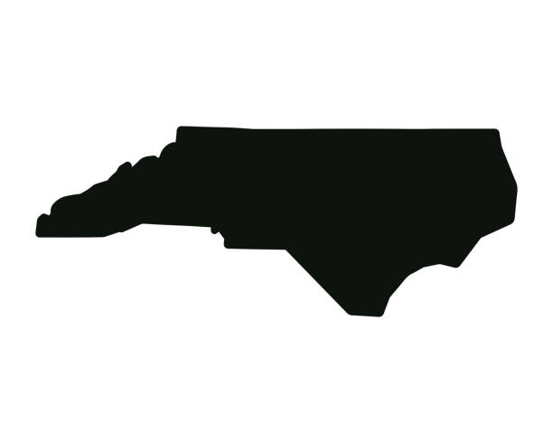
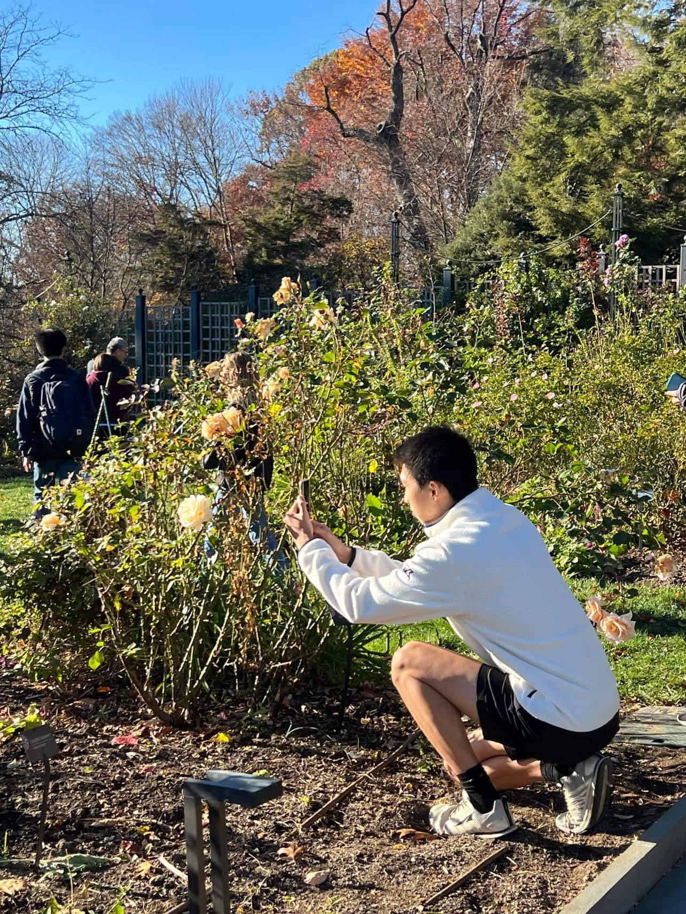

I am a student at the University of Pennsylvania interested in computer science and medicine. In my spare time, I love to engage with social, physical, and spiritual activities that help me grow as a person.
Studying Scripture helps me develop a personal relationship with God and share Jesus' love with those around me.

Who doesn't love spending time with close friends?

My go-to-stop to do strength and conditioning, destress, and immerse myself in nature.
Capturing memories all the while expressing my artistic style through various angles, frames, and moments. See Gallery for more!